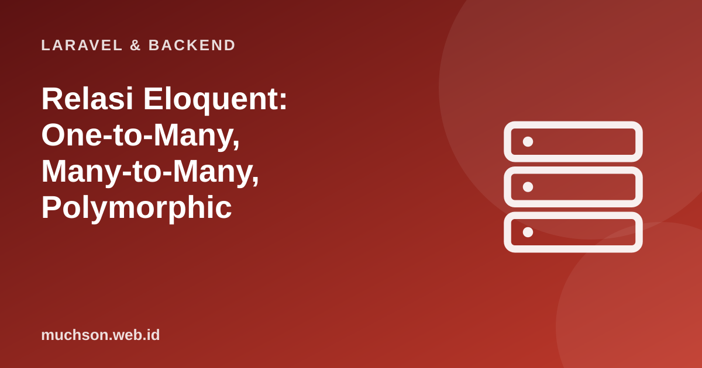

Beranda › Artikel › Laravel & Backend
Laravel & BackendRelasi Eloquent: One-to-Many, Many-to-Many, Polymorphic
Data di dunia nyata saling terhubung: pengguna punya pesanan, pesanan punya banyak produk, produk punya banyak tag, komentar bisa milik artikel atau video. Eloquent memetakan hubungan itu menjadi method yang terbaca seperti kalimat. Namun di balik setiap method ada skema tabel dan SQL tertentu; memahaminya membuat Anda merancang basis data dengan benar sejak awal.
Sebaiknya sudah paham: Eloquent dasar, SQL JOIN

Setelah membaca dan mencoba materi ini, Anda mampu:
- memilih jenis relasi yang tepat dari deskripsi kebutuhan
- merancang skema (kunci asing dan tabel pivot) untuk setiap relasi
- menulis method relasi dan memakainya (termasuk attach/sync pada pivot)
- memahami hasManyThrough dan relasi polimorfik
- menjaga performa dengan eager loading dan withCount
Kode PHP/Laravel di artikel ini mengikuti dokumentasi Laravel (versi 11 dan seterusnya, PHP 8.2 atau lebih baru). Bagian "cara kerja di balik layar" dijalankan sungguhan dengan Python atau JavaScript agar konsepnya dapat dibuktikan.
Peta relasi
| Hubungan | Skema | Method | Contoh |
|---|---|---|---|
| Satu-ke-satu | profil.user_id (unik) | hasOne / belongsTo | User ↔ Profil |
| Satu-ke-banyak | pesanan.user_id | hasMany / belongsTo | User → banyak Pesanan |
| Banyak-ke-banyak | tabel pivot dengan dua kunci asing | belongsToMany | Produk ↔ Tag |
| Has-many-through | melalui tabel perantara | hasManyThrough | Negara → Pengguna → Pesanan |
| Polimorfik | commentable_id + commentable_type | morphMany / morphTo | Komentar → Artikel atau Video |
Satu-ke-banyak dan satu-ke-satu
<?php
class User extends Model
{
public function pesanan(): HasMany { return $this->hasMany(Pesanan::class); }
public function profil(): HasOne { return $this->hasOne(Profil::class); }
}
class Pesanan extends Model
{
public function user(): BelongsTo { return $this->belongsTo(User::class); }
}
$user->pesanan; // koleksi Pesanan (properti: menjalankan query sekali, lalu di-cache pada objek)
$user->pesanan()->where('status', 'baru')->get(); // method: kembalikan builder untuk query lanjutan
$user->pesanan()->create(['total' => 50000]); // kunci asing diisi otomatis
User::has('pesanan', '>=', 3)->get(); // pengguna dengan minimal 3 pesanan
User::whereDoesntHave('pesanan')->get(); // pengguna yang belum pernah memesanBanyak-ke-banyak dengan tabel pivot
Satu produk bisa memiliki banyak tag, dan satu tag dipakai banyak produk. Relasi ini tidak bisa dinyatakan dengan satu kunci asing; dibutuhkan tabel perantara (pivot) yang menyimpan pasangan.
<?php
// migrasi pivot: konvensi nama = dua nama tabel tunggal berurut abjad: produk_tag
Schema::create('produk_tag', function (Blueprint $table) {
$table->foreignId('produk_id')->constrained('produk')->cascadeOnDelete();
$table->foreignId('tag_id')->constrained('tag')->cascadeOnDelete();
$table->primary(['produk_id', 'tag_id']); // mencegah pasangan ganda
$table->timestamps(); // bila pakai ->withTimestamps()
});
class Produk extends Model
{
public function tag(): BelongsToMany
{
return $this->belongsToMany(Tag::class, 'produk_tag')->withTimestamps();
}
}
class Tag extends Model
{
public function produk(): BelongsToMany { return $this->belongsToMany(Produk::class, 'produk_tag'); }
}
$produk->tag()->attach([1, 2]); // tambah pasangan
$produk->tag()->detach(2); // lepas
$produk->tag()->sync([1, 3, 4]); // jadikan PERSIS sama dengan daftar ini (tambah/hapus seperlunya)
$produk->tag()->toggle([3, 5]); // balik: ada -> lepas, tidak ada -> tambah
Produk::whereHas('tag', fn ($q) => $q->where('nama', 'organik'))->get();import sqlite3
db = sqlite3.connect(":memory:")
db.executescript("""
CREATE TABLE produk (id INTEGER PRIMARY KEY, nama TEXT);
CREATE TABLE tag (id INTEGER PRIMARY KEY, nama TEXT);
CREATE TABLE produk_tag (produk_id INT, tag_id INT, PRIMARY KEY (produk_id, tag_id));
INSERT INTO produk VALUES (1,'Kopi Gayo'),(2,'Teh Hijau'),(3,'Gula Aren');
INSERT INTO tag VALUES (1,'organik'),(2,'lokal'),(3,'diskon');
INSERT INTO produk_tag VALUES (1,1),(1,2),(2,1),(3,2),(3,3);
""")
q = lambda s, a=(): db.execute(s, a).fetchall()
# $produk->tag (belongsToMany): JOIN lewat pivot
print("tag milik Kopi Gayo:", q("SELECT t.nama FROM tag t JOIN produk_tag pt ON pt.tag_id = t.id WHERE pt.produk_id = 1"))
# Produk::whereHas('tag', nama = 'organik')
print("produk bertag organik:", q("SELECT p.nama FROM produk p WHERE EXISTS (SELECT 1 FROM produk_tag pt JOIN tag t ON t.id = pt.tag_id WHERE pt.produk_id = p.id AND t.nama = 'organik')"))
# withCount('tag')
print("jumlah tag per produk:", q("SELECT p.nama, (SELECT COUNT(*) FROM produk_tag pt WHERE pt.produk_id = p.id) FROM produk p"))
# sync([1,3]) untuk produk 1: hitung selisih
ada = {r[0] for r in q("SELECT tag_id FROM produk_tag WHERE produk_id = 1")}
target = {1, 3}
print("sync -> hapus:", sorted(ada - target), "tambah:", sorted(target - ada))
# kunci primer gabungan mencegah ganda
try: db.execute("INSERT INTO produk_tag VALUES (1,1)")
except sqlite3.IntegrityError as e: print("pasangan ganda ditolak:", e)tag milik Kopi Gayo: [('organik',), ('lokal',)]
produk bertag organik: [('Kopi Gayo',), ('Teh Hijau',)]
jumlah tag per produk: [('Kopi Gayo', 2), ('Teh Hijau', 1), ('Gula Aren', 2)]
sync -> hapus: [2] tambah: [3]
pasangan ganda ditolak: UNIQUE constraint failed: produk_tag.produk_id, produk_tag.tag_id
Has-many-through dan polimorfik
<?php
// Negara -> Pengguna -> Pesanan : ambil semua pesanan sebuah negara tanpa join manual
class Negara extends Model
{
public function pesanan(): HasManyThrough
{
return $this->hasManyThrough(Pesanan::class, User::class); // melalui users.negara_id dan pesanan.user_id
}
}
// Polimorfik: Komentar dapat milik Artikel atau Video
// migrasi: $table->morphs('commentable'); -> commentable_id, commentable_type (+ indeks)
class Komentar extends Model
{
public function commentable(): MorphTo { return $this->morphTo(); }
}
class Artikel extends Model
{
public function komentar(): MorphMany { return $this->morphMany(Komentar::class, 'commentable'); }
}
class Video extends Model
{
public function komentar(): MorphMany { return $this->morphMany(Komentar::class, 'commentable'); }
}
$artikel->komentar()->create(['isi' => 'Bagus!']);
$komentar->commentable; // Artikel atau Video, sesuai commentable_type
// Disarankan: pemetaan alias agar kolom tipe tidak berisi nama kelas PHP lengkap
// Relation::enforceMorphMap(['artikel' => Artikel::class, 'video' => Video::class]);Menjaga performa relasi
<?php
// N+1 pada relasi bersarang
$pesanan = Pesanan::with(['user', 'item.produk'])->latest()->paginate(20); // 4 query, berapa pun jumlah baris
// Hanya hitungan atau agregat, tanpa memuat relasi
$kategori = Kategori::withCount('produk')->withSum('produk', 'stok')->get();
// Muat relasi hanya bila diperlukan, setelah koleksi ada
$pesanan->load('user'); // lazy eager loading
$produk->loadMissing('tag');
// Batasi kolom pada relasi: 'user:id,nama' (sertakan kunci yang diperlukan)
Pesanan::with('user:id,nama')->get();
// Mencegah N+1 secara otomatis di non-produksi:
// Model::preventLazyLoading(! app()->isProduction());1. Rancang skema untuk "dokter melayani banyak pasien dan pasien dilayani banyak dokter" dengan tanggal kunjungan.
2. Tulis query: produk yang memiliki tag "diskon" dan tag "lokal" sekaligus.
3. Mengapa pivot diberi kunci primer gabungan?
4. Bagaimana menghitung jumlah pesanan setiap pengguna tanpa N+1?
- Pilih relasi dari bentuk datanya: 1-1, 1-N, M-N (pivot), through, polimorfik.
- Setiap relasi punya skema kunci asing yang jelas; pivot butuh dua kunci asing dan kunci primer gabungan.
- attach, detach, sync, toggle mengelola pivot; whereHas dan withCount untuk query relasi.
- Eager loading (with) dan preventLazyLoading menjaga performa.
Tanya jawab
Mengapa nama tabel pivot harus berurut abjad?
Bagaimana menyimpan atribut tambahan pada pivot?
Kapan membuat model untuk pivot?
Referensi
- Laravel: Eloquent Relationships
- Laravel: Polymorphic Relationships
- SQLite: Query Language
- Use The Index, Luke: Joins